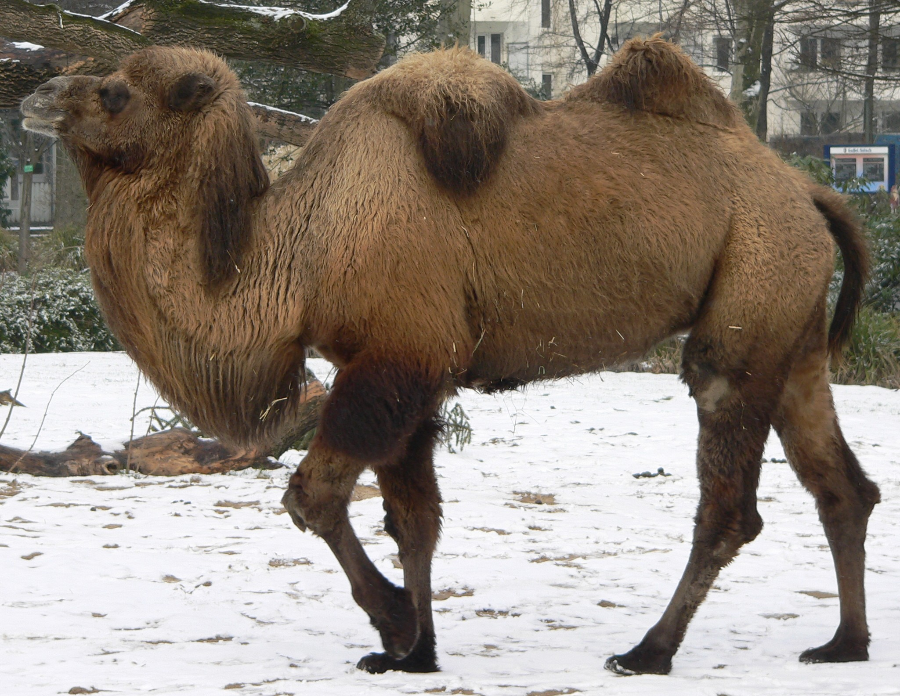

Camelids are members of the biological family Camelidae, the only currently living family in the suborder Tylopoda. The 7 extant members of this group are: dromedary camels, Bactrian camels, wild Bactrian camels, llamas, alpacas, vicuñas, and guanacos. Camelids are even-toed ungulates classified in the order Cetartiodactyla, along with species like whales, pigs, deer, cattle, and antelopes.
|  | Camelid Comparision | |||
|---|---|---|---|---|
| #of Humps | Indegenous region | Spits? | Produces Wool? | |
| Camels(Bactrian) | 2 | African/Asian | Llama | Llama |
| Llamas | 1 | Andres Mountain | ||